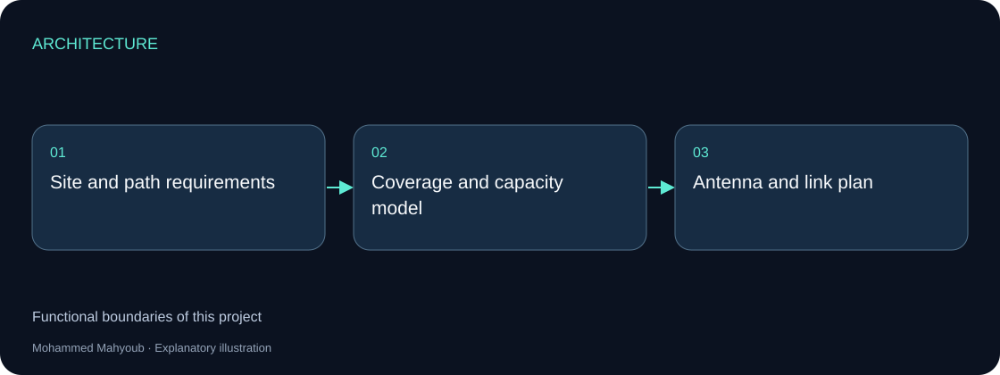
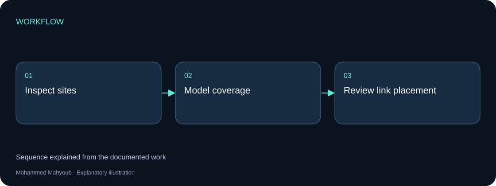
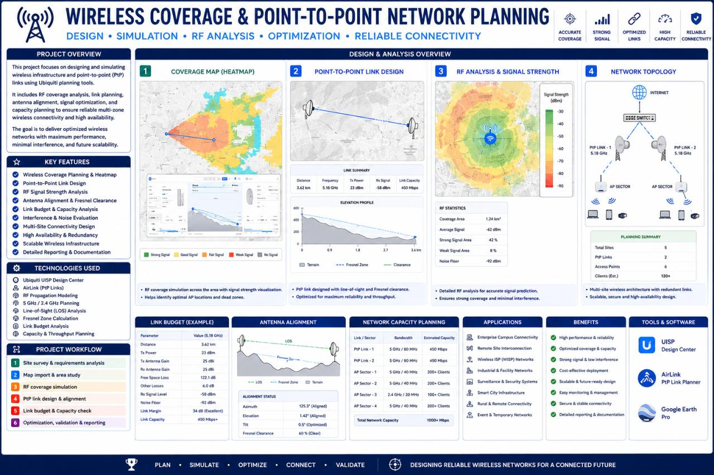

Network Engineering · RF Planning
Wireless Coverage & Point-to-Point Network Planning
Modelled wireless coverage and point-to-point connectivity, considering antenna alignment, capacity requirements and site coverage.
Implemented Project
System architecture

Implementation scope
Coverage describes where access is available; point-to-point planning describes the transport between sites. Antenna placement and alignment influence both the proposed link and its installation.
Engineering approach
The available planning image illustrates the project deliverable. This network-planning work is distinct from the VB.NET line-of-sight calculator, which supports calculations rather than documenting a deployment.

Visual documentation
Original project posters and interface screenshots are identified separately from explanatory source diagrams. The gallery documents this project only. Open any figure to inspect it at full available resolution.

